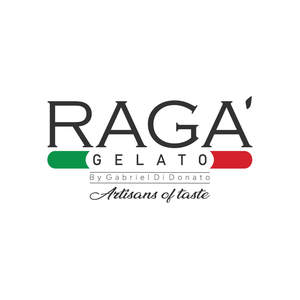

Trade Mark Journal No.2025/015 11 April 2025
UK00004151814 23 January 2025 (30,43)

- Class 30
- Ice cream; Yoghurt based ice cream [ice cream predominating]; Ice cream confectionery; Ice cream drinks; Ice cream gateaux; Ice cream cakes; Ice cream desserts; Ice cream sandwiches; Dairy ice cream; Ice cream with fruit; Fruit ice cream; Ice cream confections; Ice cream bars; Ice cream powder; Sauces for ice cream; Ice creams; Non-dairy ice cream; Vegan ice cream; Ice cream powders; Powders for ice cream; Cones for ice cream; Ice cream cones; Ice cream mixes; Ice cream substitute; Fruit ice creams; Ice creams flavoured with chocolate; Ice cream stick bars; Ice cream infused with alcohol; Ice cream cone mixes; Ice, ice creams, frozen yogurts and sorbets; Frozen confectionery containing ice cream; Ice creams containing chocolate; Powder for making ice cream; Powders for making ice cream; Soya-based ice cream substitutes; Ice lollies; Coffee-based beverages containing ice cream (affogato); Mixtures for making ice cream; Cream cakes; Soy-based ice cream substitute; Substances for binding ice cream; Instant ice cream mixes; Ice confectionery; Ice cream (Binding agents for -); Binding agents for ice cream; Ice lollies being milk flavoured; Soya based ice cream products; Ice-cream; Binding preparations for ice cream [edible ices]; Mixtures for making ice cream confections; Ice for refreshment; Organic binding agents for ice cream; Mixtures for making ice creams.
- Class 43
- Ice cream parlors; Ice cream parlour services.
Raga' Foods LTD